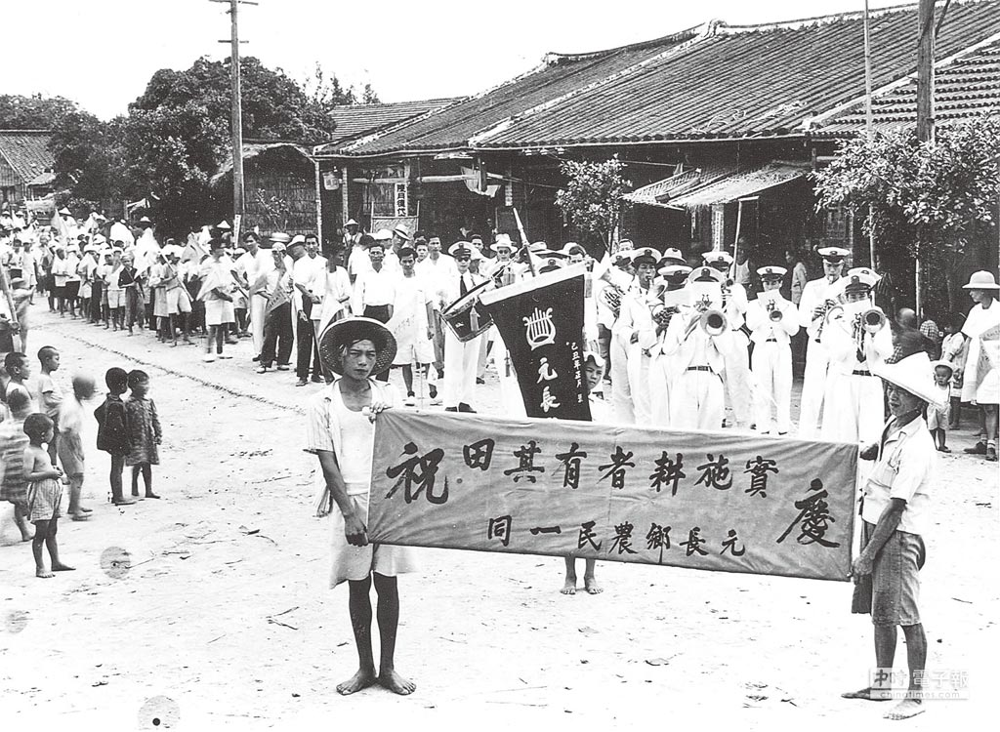
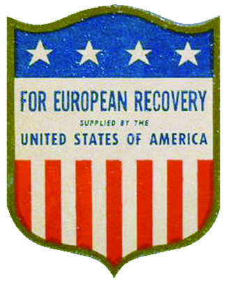
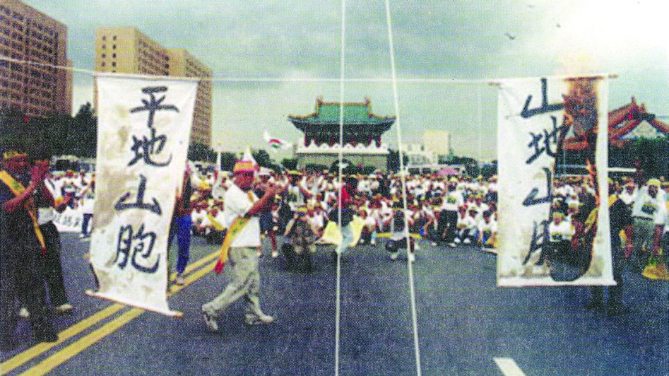

🏭 6 戰後臺灣的經濟與社會
國中歷史 1 下 L06 經濟發展、社會變遷與多元文化 CAI 互動輔助教材
從土地改革到科技島的蛻變
戰後，臺灣在政府與人民的努力下，經濟逐步起飛。從穩定物價、土地改革出發，歷經進口替代、出口導向、十大建設與產業升級，最終走向自由化與國際化。然而在經濟掛帥的過程中，也產生環境、生態、文化和勞工權益等社會問題。
本網頁將帶你走過臺灣經濟轉型的五個關鍵階段，認識社會運動與族群關係的變遷，並透過互動遊戲加深對這段歷史的理解。
本課學習重點
- 了解戰後臺灣經濟發展的五個階段與政策特色。
- 認識土地改革（三七五減租、公地放領、耕者有其田）的內容與影響。
- 理解十大建設的背景、項目與經濟轉型意義。
- 探討經濟發展帶來的社會問題與解嚴後的社會運動。
- 了解臺灣文化從中華文化、美國流行文化、鄉土文學到多元文化的演進。
 十大建設分布示意圖——帶動臺灣經濟起飛的基礎建設
十大建設分布示意圖——帶動臺灣經濟起飛的基礎建設
💰 貨幣與土地改革
🔵 進口替代
🟠 出口導向
🔴 十大建設與產業升級
🟣 自由化與國際化
💰 穩定經濟基礎
戰後初期，臺灣經濟混亂。民國 38 年，政府發行新臺幣以穩定物價。接著陸續實施土地改革，使佃農逐漸獲得自己的土地，提高農業生產。權益受損的地主在政府引導下投入工商業，形成日後經濟發展的基礎。
📋 土地改革三政策
- 三七五減租：地租不可超過耕地年收穫量的 37.5%。
- 公地放領：政府將公有耕地出售給佃農。
- 耕者有其田：政府強制收購地主部分土地，轉售給實際耕作的佃農。

課本插圖：土地改革政策推動農業生產提升🛡️ 保護國內工業
此時臺灣大量進口民生用品，呈現嚴重入超。政府採取保護國內工業與管制國外產品進口的策略，推行「以農業培養工業」，利用出口農產品賺取外匯，扶植紡織等民生必需品相關的輕工業，以滿足國內市場，減少進口。
🔑 政策要點
- 管制進口：限制國外產品進入，保護本土產業。
- 以農業培養工業：出口農產品賺取外匯，扶植輕工業。
- 發展民生輕工業：紡織等產業滿足國內市場需求。
 課本插圖：進口紡織機具，扶植國內輕工業
課本插圖：進口紡織機具，扶植國內輕工業
📦 外銷為主、設立加工出口區
由於國內市場飽和，政府改採外銷為主的「出口導向」策略。民國 55 年在高雄等地設置加工出口區，輸出食品、成衣等輕工業產品。經濟型態逐漸由農業轉變成以工業為主，大量女性投入勞動市場。
🔑 政策要點
- 設立加工出口區：高雄加工出口區（民國 55 年）為首座。
- 輕工業外銷：食品、成衣等產品出口創匯。
- 農業 → 工業：經濟型態轉型，工業產值超越農業。
🏗️ 十大建設（民國 60 年代）
因中東戰爭引發能源危機，國際油價飆漲，嚴重衝擊全球經濟。行政院院長蔣經國提出「十大建設」計畫，進行基礎建設、發展重工業，帶動景氣復甦。
- 交通運輸：中山高速公路、鐵路電氣化、北迴鐵路、臺中港、蘇澳港、中正國際機場
- 重工業：大煉鋼廠（中鋼）、中國造船廠、石油化學工業
- 能源：核能發電廠
💻 產業升級（民國 70 年代）
隨著國內工資持續上漲、環保意識抬頭，政府以新竹科學工業園區（今新竹科學園區）為重心，全力發展資訊、電子等高附加價值的高科技產業，促使經濟轉型。企業也面臨生產成本提高、勞力不足等問題，紛紛僱用國際移工。
 課本照片：新竹科學園區內的工程師
課本照片：新竹科學園區內的工程師
🌏 全球布局、邁向國際
在全球化的趨勢下，政府逐步放寬貿易限制，積極走入國際市場。民國 80 年加入亞太經濟合作會議（APEC），民國 91 年加入世界貿易組織（WTO）等國際組織，邁向自由化的全球市場。
政府進一步推動「南向」政策，投資東南亞地區市場。今後如何進行經濟升級、積極布局全球，將是日後經濟發展的關鍵。
🔑 關鍵里程碑
- 民國 80 年：加入亞太經濟合作會議（APEC）
- 民國 91 年：加入世界貿易組織（WTO）
- 推動南向政策：投資東南亞市場，分散經貿風險
- 僱用國際移工：因應勞力短缺
 課本照片：解嚴後的多元與國際化發展
課本照片：解嚴後的多元與國際化發展
戰後臺灣十大建設 - 互動學習遊戲
這是民國 60 年代蔣經國院長推動的十大基礎建設。請點選下方按鈕切換遊戲模式：
📍 請將下方的十大建設卡片拖曳（或點選配對）到地圖上的正確位置！
🚆 交通運輸
放置 6 個交通建設
⚡ 能源
放置 1 個能源建設
🏭 重工業
放置 3 個重工業建設
🇺🇸 美援對臺灣的深遠影響 (民國 40～54 年)
第二次世界大戰後，美國為防堵共產勢力擴張，開始向包括臺灣在內的盟友提供軍事、經濟與外交支持，稱為「美援」。美援不僅穩固了中華民國在臺灣的生存，更在經濟基礎、交通建設以及社會文化上留下不可磨滅的時代印記。
📈 經濟與基礎建設支持
美援大量進口民生與工業原料（如棉花、小麥、燃油），奠定了國內輕工業基礎。棉紗的引進使臺灣棉紡織業快速成長，甚至奠定了彰化社頭「襪子王國」的美譽。此外，美援貸款幫助臺灣興建數座發電廠，並購入火車頭，成為縱貫線運輸主力。
 彰化社頭織襪機：美援棉紗奠定社頭「襪子王國」地位
彰化社頭織襪機：美援棉紗奠定社頭「襪子王國」地位
🎵 社會與美國文化輸入
隨美軍進駐，美國流行文化大量傳入臺灣。美軍廣播電臺播放西洋歌曲，成為當時學生接觸西方流行文化與搖滾樂（如貓王）的主要管道。民國 68 年臺美斷交後，該電臺改制為 ICRT（臺北國際社區電臺），繼續傳播西洋歌曲。
 課本插圖：美軍電臺（今 ICRT 前身）是當時西方音樂傳入的主管道
課本插圖：美軍電臺（今 ICRT 前身）是當時西方音樂傳入的主管道
🛡️ 美援的象徵標誌
美援物資上皆印有以美國國旗為基礎設計的「盾牌狀紋章」，象徵臺美合作。在當時物資匱乏的背景下，印有美援標誌（中美合作、手拉手圖樣）的麵粉袋被許多家庭縫製成衣褲，成為獨特的時代集體記憶。
 臺灣的美援標誌
臺灣的美援標誌

歐洲的美援標章⚡ 電力與交通的躍進
美援電力貸款興建了數座大型發電廠，極大緩解了戰後臺灣工業用電短缺。在縱貫線鐵路上，美援資金購入了 CT270 型蒸汽火車頭，與原有車頭組成縱貫線最風光的載客主力，帶動經濟邁向工業化。
 臺電獲得美援貸款簽約儀式
臺電獲得美援貸款簽約儀式
🎶 流行歌曲與臺灣時代變遷
臺灣的流行歌曲風格與政治、經濟、社會文化的變化密切呼應。點擊下方不同的年代黑膠唱片，聆聽那個時代的歌聲與歷史背景：
🇹🇼 民國 40 年代：上海／香港風格，台語歌受壓抑
🎵 代表歌曲：《綠島小夜曲》、《春風吻上我的臉》二次大戰之後，由於政府推行國語運動、致力培養國家認同，台語歌謠在廣播電視播送中受到諸多限制與壓抑。此時流行歌曲曲風多延續上海與香港風格，《綠島小夜曲》傳唱一時（註：曲中的「綠島」指綠意盎然的臺灣本島而非政治犯監獄島），《春風吻上我的臉》亦風行一時。
📅 挑戰一：經濟階段排序（25 分）
請將下方的經濟發展階段拖曳到正確的年代空格中！
🏷️ 挑戰二：政策分類配對（50 分）
拖曳左邊的政策晶片，投入右邊正確的經濟階段分類盒中！
💰 貨幣與土地改革
🔵 進口替代
🟠 出口導向
🔴 十大建設與產業升級
🟣 自由化與國際化
🃏 挑戰三：建設與人物翻翻樂（25 分）
點擊卡片翻開，找出「圖片」與「說明」的正確配對！
📊 戰後臺灣經濟發展五大階段總整理
| 時期 | 時間 | 政策名稱 | 核心內容 | 關鍵建設與事件 |
|---|---|---|---|---|
| 💰 貨幣與土地改革 | 民國 38 年起 | 穩定經濟基礎 | 發行新臺幣、三七五減租、公地放領、耕者有其田 | 佃農獲土地、地主轉投入工商業 |
| 🔵 進口替代 | 民國 40 年代 | 保護國內工業 | 管制進口、「以農業培養工業」、扶植紡織等輕工業 | 滿足國內市場、減少進口 |
| 🟠 出口導向 | 民國 50 年代 | 外銷為主 | 設立加工出口區（高雄）、輸出食品成衣等輕工業 | 經濟型態由農業轉為工業 |
| 🔴 十大建設與產業升級 | 民國 60～70 年代 | 重工業與高科技 | 十大建設（能源危機後）、新竹科學園區 | 中山高、中鋼、核電廠；發展資訊電子業 |
| 🟣 自由化與國際化 | 民國 80 年代起 | 全球布局 | 加入 APEC（民80）、WTO（民91）、南向政策 | 僱用國際移工、布局東南亞 |
🎭 文化演進對照
| 時期 | 文化主流 | 背景與特徵 | 代表事件 |
|---|---|---|---|
| 民國 40 年代 | 🇹🇼 中華文化 | 清除日本影響、提倡中華文化、禁說方言。台語歌謠受壓抑。 | 學校教中國地理、國語運動。《綠島小夜曲》、《春風吻上我的臉》等香港上海風格流行。 |
| 民國 50 年代 | 🇺🇸 美國流行文化 | 韓戰後美援引入，西洋歌曲與搖滾樂風行臺灣。 | 駐臺美軍電臺（ICRT 前身）播放西洋歌曲。貓王與披頭四音樂征服學生。 |
| 民國 60 年代 | 📖 鄉土文學與民歌 | 外交挫敗（退出聯合國、斷交）→回歸本土意識，關懷底層勞工小人物。 | 鄉土文學：黃春明《兒子的大玩偶》、王拓《金水嬸》。校園民歌：「唱自己的歌」運動，如《橄欖樹》、《龍的傳人》。 |
| 民國 70 年代以後 | 🌈 多元文化與音樂 | 政治社會解嚴開放，本土文化與原住民文化受重視。多元文化平等與全球布局。 | 本土文化復興、新住民融合。流行歌曲：林強《向前走》引領新台語歌；伍佰台式搖滾；偶像小虎隊、五月天；原民音樂崛起。 |
🇺🇸 美援對臺灣的多面向影響（民國 40～54 年）
| 面向 | 內容 |
|---|---|
| 🤝 外交軍事 | 臺灣納入美國反共防衛體系 |
| 💰 經濟 | 棉紗配給（社頭襪子王國）、貸款建電廠、購入火車頭，配合進口替代政策 |
| 🎵 社會文化 | 美軍電臺播放西洋歌曲，中美斷交後改為 ICRT |
🏙️ 都市化與鄉村問題
隨著經濟發展，都市因擁有較多工作機會，吸引就業人口，形成人口集中都市的現象。農村、部落、山村與漁村則面臨人口外移與老化的問題。
📢 社會運動興起
經濟發展帶來環保、勞工等問題。戒嚴時期社會運動受政治掌控，解嚴後各種新興社會運動形成風潮，空氣汙染、勞工權益等議題逐漸獲得關注。
👥 族群關係與權益
原住民正名運動
政府曾將原住民稱為「山胞」，要求以漢名登記戶籍。解嚴後，原住民以「正名」與「自治」為目標爭取權益。民國 83 年修憲將「山胞」改稱「原住民」，正名運動獲得具體成果。
客家族群母語運動
戰後政府積極推行國語運動，造成許多族群的語言文化在國家政策下遭到衝擊。解嚴後，客家族群提倡母語運動與傳統文化傳承。
新住民與國際移工
近年來，新住民與國際移工使臺灣的文化更加豐富多樣，多元文化與族群平等的價值已成為臺灣文化發展的主流。

民國 83 年原住民正名運動現場。同年修憲將「山胞」改稱「原住民」。🎭 戰後臺灣文化演進四階段